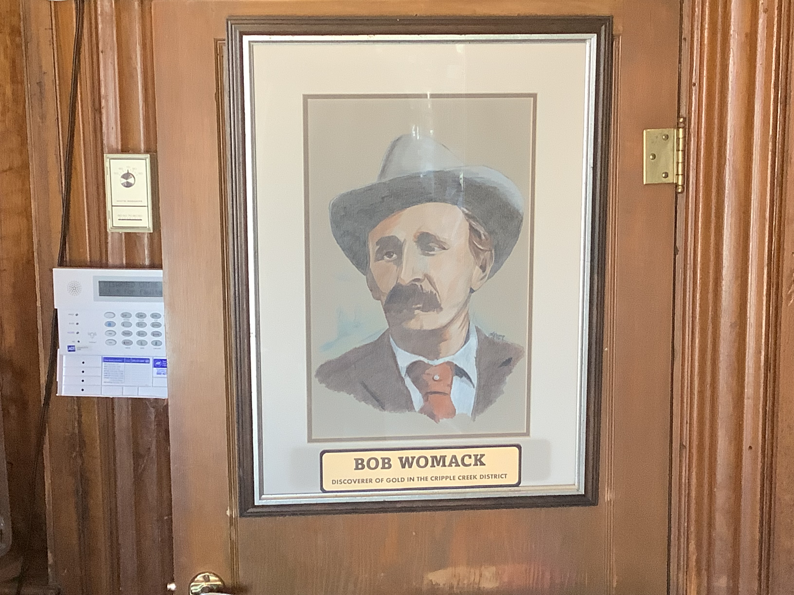
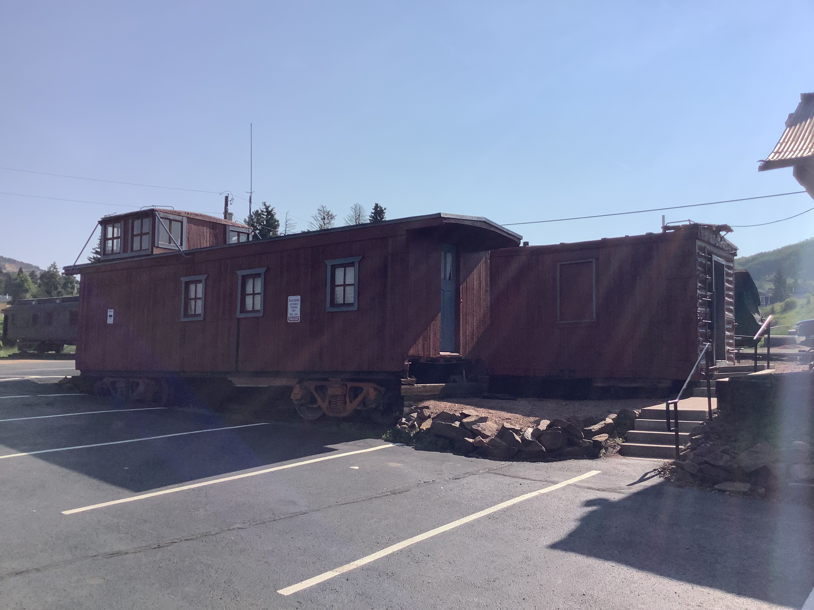

This page on the website tells all the information about Cripple Creek, Colorado.The depot is one great place to find information about the trains. The items that I have on this site are pictures of things that are on display in the depot. When visiting Cripple Creek, there is plenty of things to see and do. Riding the train with your family on the Cripple Creek & Victor Narrow Gauage Railroad is really great. Even old people like my grandparents and my aunt showed up to look around in the Depot Museum ( the original depot that belonged to the railroad many years ago) A lot of the items on display can take you back to those early days of railroads.
 